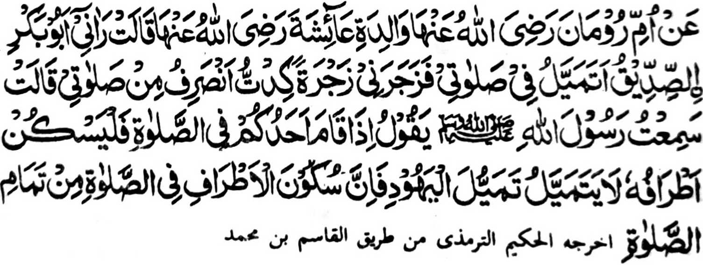
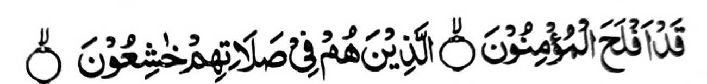

Piyanothol o Umme Rooman a ina o A'isha (Radhiallaho 'Anha, "Miya-ilay ako o Abu Bakr (Radhiallaho 'Anho) a gi-i ako mela-i-laing ko Sambayang na pimbongetan ako niyan sa kambonget a mikhaitobo na makambengkas ako ko Sambayang aken." Pitharo iyan, "Miyaneg aken so Rasulollah (Sallallaho 'Alaihi Wasallam) a gi-i niyan tharo-on, 'Igira tomilindeg so tao ko Sambayang na pakatatarega niyan so lawas iyan. Oba di pela-i-laing sa lagido gi-i kapela-i-laing o manga Yahoodi sabap sa so kapakatatarega ko lawas si-i ko Sambayang na ped ko ikhatarotop o Sambayang.'"
So kapakatatarega ko lawas igira Sambayang na inipaliyogat o madakel a Hadith. Si-i sa paganay na aya ola-ola o Nabi (Sallallaho 'Alaihi Wasallam) na lomalangag sa langit ka oba maka-toron so Jibrail (Alaihis Salaam) a maawid sa Ayaat, taman sa so manga mata niyan na di niyan mai-inengka na pekhilangag iyan apiya igira gi-i zambayang. Kagiya mitoron so paganay a dowa Ayaat ko Soorah Mo'minoon, ma-ana

"Sabenar a Phakada-ag so Miyamaratiyaya. so siran si-i ko Sambayang iran na somasangkop siran." [Soorah Al-Mo’minoon: 1 -2]
na inibaba iyan den so pangilai-layan niyan igira gi-i zambayang. Miyapanothol pen a si-i ko paganay na so manga Sahabah na igira gi-i siran zambayang na di siran gi-i maniri-siri, ogaid na soden so kinitoron angka-iya Ayaat na initareg iran a ola-ola iran noto. Si-i ko kaphagosaya sangka-iya manga Ayaat, na so Abdullah bin Umar (Radhiallaho ’Anho) na pitharo iyan, "Igira tomitindeg so manga Sahabah ko Sambayang na di siran phaningi-dingil. Tanto siran a tomotordo ko Sambayang iran a so manga pangilai-layan iran na tatap ko sododan niran, go miyatiman so kasasangkop iran ko Allah a Kadenan iran. Aden a miniza ko Ali (RadhialIaho 'Anho), 'Antona-ai kambayorantang ko Sambayang?' Pitharo iyan, 'So katekhes o pamikiran si-i ko Sambayang na ped ko kambayorantang."'
So Ibn Abbas (Radhiallaho 'Anho) na pitharo iyan, "So somasangkop (a miya-aloy sangkanan a manga Ayaat) na siran so manga tao a ika-alek iran so Allah ago di pekha-o-kaog igira gi-i zambayang."
So Abu Bakr (Radhiallaho ’Anho) na piyanothol iyan, "Miyaka-isa na so Nabi (SallaIlaho 'Alaihi Wasallam) na pitharo iyan, 'Lindong kano ko Allah sabap ko mamantiya a kambayorantang.' Pitharo ami, 'Antona-ai mamantiya a kambayorantang, Hay Nabi o Allah (Sallallaho 'Alaihi Wasallam)?' Pitharo iyan, 'Giyoto so tao a mamantiya na mbabayorantang, ogaid na so kapeMunapik na zisi-i ko poso."'
So Abu Darda (Radhiallaho 'Anho) na piyanothol iyan a lagida-i a Hadith a so Nabi (Sallallaho 'Alaihi Wasallam) na miyapanothol a miyatharo iyan, "So kapanangin a kambayorantang na giyoto so tao a si-i ko mapayag iyan na mamantiya na matetekhes so pamikiran niyan, ogaid na so poso na da-on so kambayorantang."
So Qatadah (Radhiallaho 'Anho) na pitharo iyan, "So kambayorantang ko Sambayang, na so poso na pheno-on a kalek ko Allah, na go so pangilai-layan na imbaba."
Miyaka isa na miya-ilay o Nabi (Sallallaho 'Alaihi Wasallam) a mama a phagipon niyan so sompa iyan ko masa a gi-i sekaniyan zambayang. Pitharo iyan, "Opama ka so poso iyan na madadalemon so kambayorantang, na so langon o lawas iyan na di maka-og."
So Aisha (Radhiallaho 'Anha) na miyaka-isa na iniza-an niyan so Nabi (Sallallaho 'Alaihi Wasallam) o antona-a i pamikiran niyan ko tao a gi-i maningi-dingil igira gi-i zambayang. Pitharo iyan, "Ipembinasa oto o Saitan ko Sambayang."
Miyaka-isa na so Nabi (Sallallaho 'Alaihi Wasallam) na pitharo iyan, "So manga tao a phelangag sa poro igira gi-i zambayang na taregen niyan angkanan a ola-ola, ka amay-amay na mabolandang so pangilai-layan niran na di kiran den makandod ko asal iyan."
Madakel a mitharo ko manga Sahabah ago so manga (Tabi-in) miyakatondog kiran a so kambayorantang na aya ma-ana niyan na so karerenek ko Sambayang. So Nabi (Sallallaho 'Alaihi Wasallam) na miyapanothol (o madakel a miyanothol) a miyatharo iyan, "Pamayandegen niyo so omani Sambayang si-i ko okit a (kambayorantang) lagid o ba sekaniyan i mori-pori a Sambayang iyo ko kawiyag-oyag iyo."